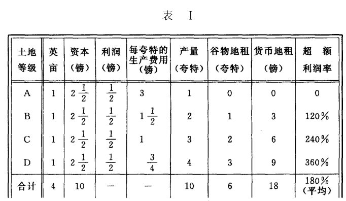
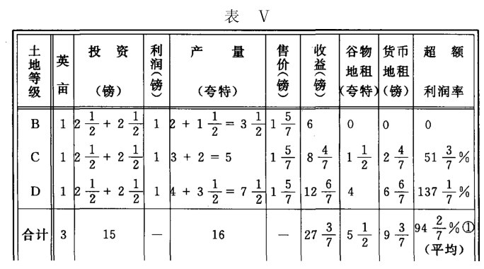
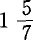
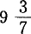
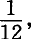
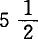
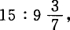

Ⅱ.追加资本的生产率降低
这个情况不会引出什么新的东西，只要在这里假定，同刚才考察过的情况一样，生产价格所以能够下降只是因为追加资本投在比A好的土地上，A的产品已经变为多余，因而资本已经从A抽出，或A已经用在别种产品的生产上。这种情况已经在上面详细论述过了。已经指出，在相同的情况下，每英亩的谷物地租和货币地租可以增加、减少或者不变。
为了便于比较，我们先把表Ⅰ抄在下面：

现在我们假定B、C、D在生产率降低时提供的16夸特，已经足以把A从耕地中排挤出去，表Ⅲ就会变成下表：

这里，追加资本的生产率降低，但各级土地上的降低额不等，同时起调节作用的生产价格由3镑下降到镑。投资增加了一半，由10镑增加到15镑。货币地租差不多降低一半，由18镑降到镑，谷物地租却只减少由6夸特减少到夸特。总产量由10夸特增加到16夸特，增加了60%。谷物地租占总产量三分之一强。预付资本和货币地租之比为以前为10∶18。